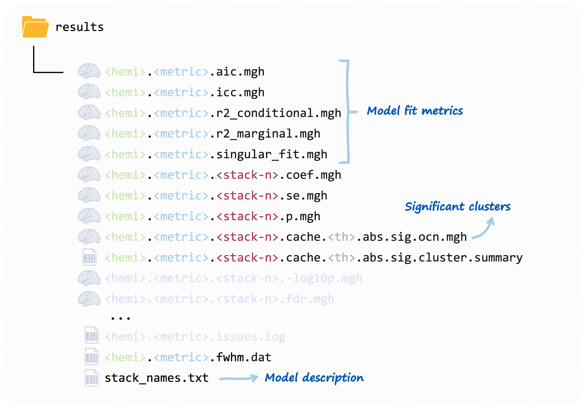

Running vertex-wise linear mixed models
Serena Defina
2026-07-29
Source:vignettes/articles/03-run-vw-lmm.Rmd
03-run-vw-lmm.RmdWarning
verywiselets you run vertex-wise analyses however you want to. For example, you can add interactions and splines / polynomials to your models, as many random intercept and slopes as your heart desires…, you can use liberal thresholds and test as many hypothesis as you have time for. Remember: this software is just a tool, and it is up to you to use it sensibly.
With your set-up and data ready, it is finally time to use some
verywise functionality.
In this article we’ll cover linear mixed models, but first, you’ll need to load the package into your R session:
Wait, what is a linear mixed model again?
A linear mixed model (LMM) is a multilevel regression technique, that is especially useful when observations are clustered (e.g. across neuroimaging sites) or repeated (across time).
In a nutshell, a LMM includes both fixed effects (parameters associated with the entire population) and random effects (parameters that vary across groups, such as subjects or sites).
Later in this tutorial, a few important considerations for building and interpreting LMMs are highlighted. If you want to learn more about the theory behind this technique, check out the resources at the end of this article.
Run a vertex-wise linear mixed model
One of the core functions in the verywise package is
run_vw_lmm which fits a linear mixed model to each vertex
on the brain surface.
Note:
run_vw_lmmhas a small brotherrun_voxw_lmmfor running the same model to an arbitrary matrix of datapoints (e.g. voxel data)
Let’s demonstrate a simple (and probably most common) example of a mixed model, in which a single grouping factor (participants) is modelled as a random intercept:
# Run a vertex-wise linear mixed model
run_vw_lmm(
formula = vw_thickness ~ sex * age + site + (1 | id), # model formula
pheno = "path/to/phenotype/data.rds", # or an R object already in memory
subj_dir = "/path/to/freesurfer/subjects", # Pre-processed brain data location
outp_dir = "/path/to/output", # Where you want to store results
hemi = "lh", # (default) or "rh": which hemisphere
n_cores = 4 # number of cores for parallel processing
)The function first validates all inputs, then runs
lme4::lmer on every vertex in the selected hemisphere.
Results are written to outp_dir (see Output structure).
The key parameters are described in the following sections.
Main arguments
formula
A model formula object. Use this to specify the LMM you wish to run,
using lme4
syntax, for example:
vw_area ~ sex * age + site + (1 | id/site). See the next
section for some advice, cheatsheets and references on model
specification.
The outcome variable must be one of the supported
brain surface metrics computed by FreeSurfer, prefixed by
vw_:
| Metric | Description |
|---|---|
vw_thickness |
Cortical thickness |
vw_area |
Cortical surface area (white surface) |
vw_area.pial |
Cortical surface area (pial surface) |
vw_curv |
Mean curvature |
vw_jacobian_white |
Jacobian determinant (white surface) |
vw_pial |
Pial surface coordinates |
vw_pial_lgi |
Local gyrification index (pial surface) |
vw_sulc |
Sulcal depth |
vw_volume |
Gray matter volume |
vw_w_g.pct |
White/gray matter intensity ratio |
vw_white.H |
Mean curvature (white surface) |
vw_white.K |
Gaussian curvature (white surface) |
It is currently only possible to have brain metrics as outcome variables.
pheno
The phenotype data. This is either:
- an R object already loaded in your environment (pass the object name directly), or
- a string containing the path to a data file, that
will then be read into memory for you. Supported file extensions:
rds,csv,txtandsav.
Both single datasets (e.g. a
data.frame) and multiply imputed datasets
(i.e. a mids object or a list of data frames) are
supported. Either way, the data must be in long format
and it must contain all variables in formula plus a
folder_id column (see below).
More details on format requirements can be found in the Data format article. For information on how multiple imputation results are pooled, see below.
subj_dir
The path to the FreeSurfer data directory. This must follow the
verywise directory structure (see Data format article for details).
hemi
Hemisphere to analyse. Options: "lh" (left hemisphere;
default) or "rh" (right hemisphere). For whole-brain
analysis, you should run the function twice (See the next article for reasons and tips to
automate this process.
Other arguments
These arguments are all optional, but you may want to tweak them depending on your analysis:
outp_dir: the path to the output directory, where results will be stored. IfNULL(default), the function creates a “verywise_results” sub-directory in the current working directory (not recommended for tidiness reasons).-
fs_template: which FreeSurfer template to use for vertex registration. Options:-
"fsaverage"(default) = 163842 vertices (highest resolution and default), -
"fsaverage6"(default) = 40962 vertices, -
"fsaverage5"(default) = 10242 vertices, -
"fsaverage4"(default) = 2562 vertices, -
"fsaverage3"(default) = 642 vertices
-
Lower resolutions are useful for testing model specifications because
they cut computation time. verywise will downsample into
lower resolutions for you, however we recommend running the final
analyses run using the template that the data was registered to. Also
note that FreeSurfer cluster correction requires template specific
simulation files.
folder_id: Name of the column inphenothat contains subject directory names for the input neuroimaging data (e.g."sub-001_ses-baseline"or"site1/sub-010_ses-F1"). These are expected to be nested insidesubj_dir. Default:"folder_id".n_cores: Number of CPU cores for parallel processing. Default:1. The value you provide will be checked against the number of available CPU cores on your machine.weights: A string (column name inpheno) or numeric vector of model weights (e.g. inverse-probability weights). Note that weights are not normalized or standardized in any way. If a vector, its length must match the number of rows in the data. Default:NULL.seed: Random seed for reproducibility. Default:3108.save_ss: Whether to save the super-subject matrix as an.rdsfile for reuse in future analyses. Can also be a path string. WhenTRUE, saved to<outp_dir>/ss. Default:FALSE.
Even more arguments (fine-grained control)
These are more advanced arguments that you typically won’t need, but you may want to tweak depending on your analytical (and control) needs:
apply_cortical_mask: Whether to exclude non-cortical vertices. Default:TRUE(recommended).tolerate_surf_not_found: Maximum number of missing or corrupted surface files tolerated before execution stops. Default:20.lmm_control: A list of control parameters passed tolme4::lmer()(e.g. optimizer choice, convergence criteria). Must result fromlmerControl(). Default: useslme4defaults.REML: Whether to use Restricted Maximum Likelihood for fitting the linear mixed model. Default:TRUE.chunk_size: Number of vertices processed per chunk in parallel operations. Larger values use more memory but may be faster. Default:1000.FS_HOME: Path to the FreeSurfer home directory. Defaults to the$FREESURFER_HOMEenvironment variable if set during installation (see Set-up article).fwhm: Full-width half-maximum for the smoothing kernel. Default:10.-
mcz_thr: Monte Carlo simulation threshold. Accepted values (equivalent forms separated by/):13 / 1.3 / 0.0520 / 2.0 / 0.0123 / 2.3 / 0.005-
30 / 3.0 / 0.001(default) 33 / 3.3 / 0.000540 / 4.0 / 0.0001
cwp_thr: Cluster-wise p-value threshold. Set to0.025by default (i.e. accounting for two hemispheres). Adjust this according to the number of analyses you are running.save_optional_cluster_info: Whether to save additional output from themri_surfclustercall. Default:FALSE.save_residuals: Whether to save aresiduals.mghfile. Default:FALSE(recommended, as these files can be large).verbose: Whether to display progress messages. Default:TRUE.
A little more theory: constructing the right model
Model specification is probably the most important step when running a LMM (or any model really). A poorly specified model can lead to biased estimates, incorrect inferences, and misleading conclusions. And… since you are fitting hundreds of thousands of models (one per vertex), getting this right from the start (and ideally consistently across the brain), will save you a good deal of time.
Is my variable a fixed or a random effect?
In many cases, the same variables could be considered either a random or a fixed effect (and sometimes even both at the same time, though I wouldn’t get too excited about that). The difference between these two modeling choices has little to do with the variables themselves, and a lot more to do with your study design / research question.
In broad terms, fixed effects are variables you are interested in, you want to know about their association with the brain metric of choice. Random effects are grouping factors (i.e. categorical variables) that you are not specifically interested in, but you know are likely to influence such brain measures (e.g. scanner, site, subject ID).
Note: Random effects may not be appropriate when the number of factor levels is very low (a commonly reported rule of thumb is < 5), or when you would not assume that your factor levels come from a common distribution (e.g. treating male and female as two draws from an infinite population of sexes, which has a mean that makes a sense). Read more about this topic here, here, and here.
Random structure specification
The clustering patterns that can be modeled using random effects can
take many forms. The lme4 formula syntax is very flexible.
Almost *too flexible**, so it can be tricky to get your head around all
the available options. Here is a quick cheatsheet adapted ( / stolen)
from StackOverflow (RIP):
| formula | meaning |
|---|---|
(1 | group) |
random group intercept |
(x | group) = (1 + x | group)
|
random slope of x within group - with correlated
intercept |
(0 + x | group) |
random slope of x within group - no variation in
intercept |
(1 | group) + (0 + x | group) |
uncorrelated random intercept and random slope within group |
(1 | site/id) =
(1 | site) + (1 | site:id)
|
intercept varying among sites and among people within sites (nested random effects) |
site + (1 | site:id) |
fixed effect of sites plus random variation in intercept among people within sites |
(x | site/id) =
(x | site) + (x | site:id)
|
slope and intercept varying among sites and among people within sites |
(x1 | site) + (x2 | id) |
two different effects, varying at different levels |
(1 | group1) + (1 | group2) |
intercept varying among crossed random effects (e.g. site, year) |
Nested vs. crossed random effects
Clustering in longitudinal neuroimaging data is often
hierarchical: repeated brain observations are nested within
individuals, individuals are nested within sites, sites within cohorts,
and so on. These can be modelled as nested random
effects (e.g. (1 | site/id)).
In other cases, there is no nesting structure. For example, if
participants complete multiple tasks (or questionnaires or image
acquisition protocol…) and observations are clustered both by individual
and by task type, this would be a crossed random
effects structure: one level of a random effect appears in
combination with more than one level of another
(e.g. (1 | id) + (1 | site) in a design were people move
across sites).
verywise output
Once run_vw_lmm has done its thing, you should find a
series of files in your output directory, more or less looking like
this:

Each fixed effect term you have included in the model, will get its
set of vertex-wise coefficients, SEs, p-values and (optionally)
significant clusters. The stack_names.txt file contains the
mapping that you (and verywise) an use to identify which
stack corresponds to what term.
These are all mgh files that you can read using
FreeSurfer or verywise itself (with
load.mgh()).
Note: a “compressed version” of this output is on its way! If you would like something else to be outputted, let us know!
The model fit outputs are discussed more in detail in this article
A note on P-values
P-values for fixed effect in LMM are a tricky business. This is because, in unbalanced or nested designs the effective degrees of freedom for each parameter are not straightforward to compute analytically. You can read more about this here.
In verywise p-values are are calculated using the
t-as-z approximation (i.e. assuming a Gaussian
distribution of observations conditional on fixed and random effects).
This approximation works well for under certain conditions (i.e. large
sample sizes, and balanced designs with single or nested random effects
only; see Luke
(2017)).
Please note that more complex designs benefit from alternative
approximations (Satterthwaite, Kenward-Roger) that are not yet
implemented directly in verywise (but can be obtained using
the pbkrtest or lmerTest packages)
Next article: Run many vertex-wise linear mixed models